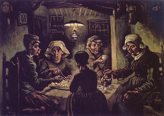

Bava Metzia 87 - Workers Eat While Harvesting

Abraham asked for the people to exhibit signs of aging, and " Now Abraham was old, well on in years …" Jakov asked for feebleness to precede death, and "… he said to Joseph, ‘Behold! - your father is ill ' …"
Workers may eat from the employer’s food while harvesting it . They may also snack on it while further working on it, until the time the work process is complete and the tithing obligation starts. This is a Torah decree, and it applies only to something that grows from the ground. A worker hired to weed out a field of onions can’t eat them, as well as one hired to repack fig cakes that split apart.